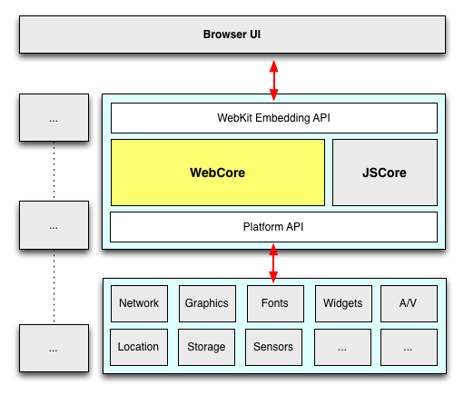

- Android 및 iOS가 구동되는 모바일 단말
- PC환경은 Chrome, Firefox, IE 서로 다른 엔진간의 파편화
- WebKit 엔진 계열
- 현 시점에서는 WebKit for Safari, Blink for Chrome and Chrome for Android
- Firefox, IE, Opera 는 구현 방식이 현격이 다를수 있음
- Web site, WebView를 통한 hybrid 공통
- WebView의 WebKit과 Browser의 WebKit은 파편화되어 있으나 일반적으로 적용 가능
- JIT enable 여부, CSS일부 property등의 동작은 다를수 있으나, 공통적으로 적용 가능
The Power of HTML5:
Beyond the Web front-end you know

HTML5 animation with physics?
HTML5 Game?
Hype(과대 광고) or Hope(희망)
개발 제약 조건
- Not for fancy demo
- Mobile
- Commercial-ready
Web App Platform Architecture
- WebKit fragmentation
- Android 2.x vs Android 4.x
- Android vs iOS
- Android vs Chrome
- Browser vs Webview

Webkit과 Platform별 Port 이해하기


http://paulirish.com/2013/webkit-for-developers/
WebKit 내부 Tree
- DOM tree: Document내의 모든 DOM node를 갖음
- RenderObject tree: DOM node중에 화면에 보이는 node
- RenderLayer tree: 한번에 같이 painting 할 RenderObject를 모아서 관리: 같은 z-index에 있는 node

다중 Layer Painting 절차
- SW rendering path (CPU)
- 하나의 graphic buffer를 할당(mobile에서는 이것도 GPU를 활용하는 texture 임, ana backingstore)
- Z order에 따라 뒤에서 앞으로 칠함: Hello를 칠함 --> World 칠함

- HW 가속 path: Accelerated compositing by GPU
- CPU graphcs buffer와 GraphicsLayer 별 GPU가 접근하는 buffer 생성
- Layer별로 주어진 buffer에 painting: 변경 내용이 없으면 buffer를 그대로 둠
- 모든 결과를 sync후 GPU를 통해서 compositing하여 하나의 결과물로 만든 후 windowing system buffer로 복사
GPU기반 합성
- CPU로 만들어진 texture는 다시 repaint되거나, 가속영역에서 제거되지 않을 경우 OpenGL ES 내에서 연속적인 합성을 위하여 재활용된다.

Chrome Dev Tool: Timeline
- 상단 panel
- Events: 시간축으로 발생한 event를 순차적으로 보여줌
- Frames: 시간축으로 매 frame 단위로 event를 순차적으로 보여줌
- Memory: 메모리 사용 양을 보여줌
- 하단 record panel
- Recalculate Style: 변경된 CSS 속성값에 따라 전체 style 값을 다시 계산
- Layout: 변경된 style값에 따라 element의 위치 값을 재계산
- Paint: layout이 완료된 RenderLayer들에 속한 element들을 z-ordering을 고려하여 그리
- Composite Layers: Document를 구성하는 모든 RenderLayer를 합성하여 화면에 최종 출력
- 각종 event fire: setTimout, requestAnimationFrame등